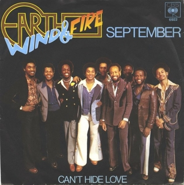
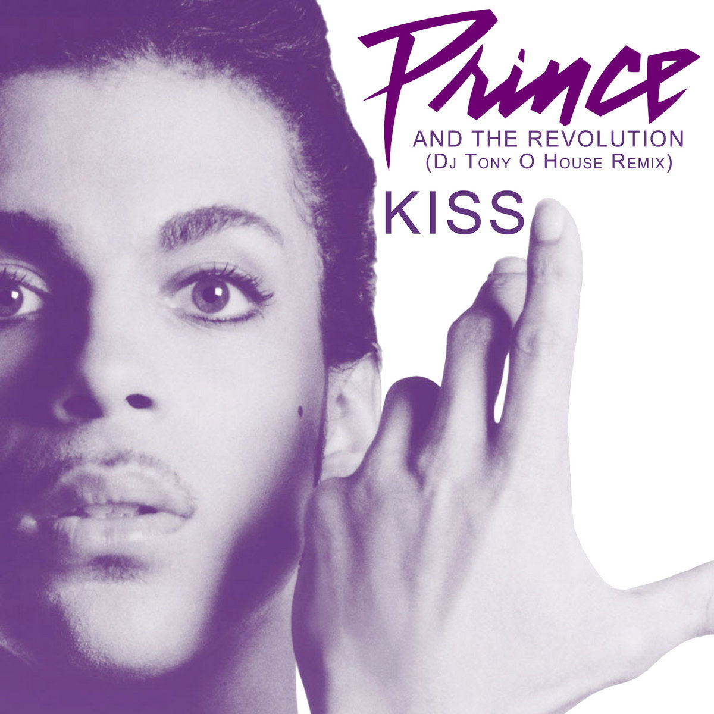
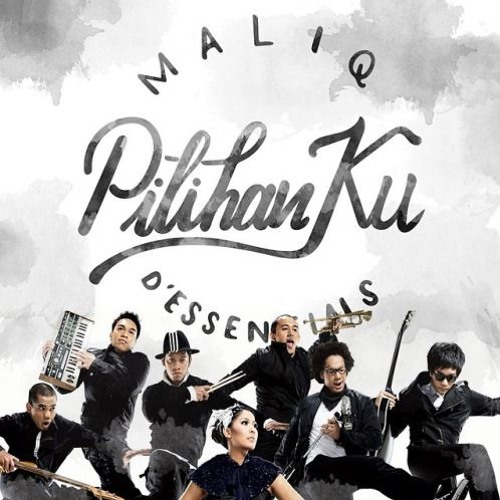

Uptown Funk
Mark Ronson (feat. Bruno Mars)
4:30 • Energetic • Modern Funk
Papa's Got a Brand New Bag
James Brown
2:10 • Classic • Funk Pioneer

September
Earth, Wind & Fire
3:35 • Joyful • Dance FunkKhayalan
The Groove
4:01 • Funky • Soulful

Kiss
Prince
3:46 • Minimal • Funk Pop

Pilihanku
Maliq & D'Essentials
3:40 • Smooth • Funk Soul